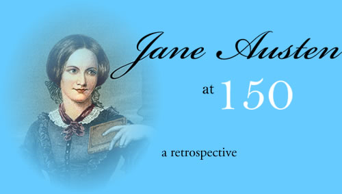
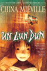

Sham is an ongoing web-based publication dedicated to observing and celebrating creative efforts in all media, but most especially writing because that is what we like best.
We present opinions, perspectives, and dialogues. We do not pursue any particular agenda, ideology, or purpose beyond our primary mission (see above).
We do not believe in objective judgments or realities. Sham exists in its own reality, which may or may not coincide with your own. Whatever you choose to take away from the world of Sham into your own world, know that you do so at your own risk.
There may also be cartoons.
Samuel Spears
Editor
Edith Crocker
Articles Editor
Edward Dandiman
Reviews Editor
Ioan Finagle
Interviews Editor
Heinrich Arsenault
Managing Editor
Eric Felcher
Web Editor
Jose Lyman
Illustrations

Jane Austen at 150
05/01/2007 07:54:24 PM

by Elsa Samples
Jane Austen's birthday is just around the corner, and it's hard to believe that the British super-authoress, who seems to have a new movie adaptation released every year, is not only not alive and well -- she died in 1815 -- but about to turn a ripe old 150.
Austen, best known for her novels Pride and Prejudice (1789), Sense and Sensibility (1801), and Jane Eyre (1808), was born in Derbyshire, England, in 1775. The daughter of an Anglican minister and a Dutch shipping heiress, Austen grew up in the bosom of upper-crust English society, and honed her budding writing skills with the kind of education, courtesy of tutors from Cambridge and Oxford, that only extravagant colonial-era wealth could buy.
How and why Austen came to the novelist trade, no one really knows. Some attribute Austen's literary ambitions to an early encounter with George Eliot during a visit to London. Austen, barely fourteen but already a precocious writer and avid reader, so impressed Eliot with her knowledge of the as-yet-obscure author's works (Eliot would later become the toast of England with her comic novels Tristram Shandy and Vanity Fair) that Eliot recorded their one brief conversation in her diary, calling Austen a "frighteningly bright child of whom, one can scarcely doubt, we shall hear a great deal in years to come." Eliot's writing was certainly a strong influence on Austen, as evidenced by the character of Knightley in Emma, who was heavily modeled upon the titular protagonist of Eliot's Silas Marner.
The tumultuous creation of Pride and Prejudice, Austen's stunning debut, is the stuff of literary legend. By many accounts, Austen was so distraught with anxiety during the writing of the early chapters of the novel that she took to pacing the hallways of Wensleydale Manor from midnight until dawn, muttering to herself and even scrawling notes on the walls with her ink-smeared fingernails.
This was of course scandalous behavior in genteel British society, and the Austens soon had to endure constant whispered gossip about "that odd, spookly little girl" who would eventually, no one doubted, end up either insane, a spinster, or both. Austen's eccentric behavior soon drove her exasperated, mortified father to threaten to consign Jane to a sanitarium if she did not give up her "ridiculous, unseemly, unladylike" hobby. Jane, of course, refused, and her father's wrath was curbed only by the intercession of no lesser a light than Thomas Hardy, whose encouraging letter (referring to Jane as "the blossoming rose of English letters") convinced the Austen paterfamilias that Jane's talent was real -- and prodigious.
Rumors that Austen resorted to laudanum to calm her nerves while completing Pride and Prejudice have little supporting evidence, but it is true that writer's block and literary stage fright hounded Austen throughout her writing career. As she wrote to her publisher, Alton Furrier, whose Lord & Marks Co. published Sense and Sensibility, "I know not the design of the Creator in weaving into my nature not only the love of art, but also the absolute horror of its creation; but in so doing He has most certainly dispelled any hopeful uncertainty I have harbored as to His insensibility to the cruelest species of humor."
Though the recipient of more than one marriage proposal during her brief lifetime -- among her suitors was none other than W.B. Yeats -- Austen never married, and died at the tragically young age of forty from uncertain causes (most accounts attribute her death to tuberculosis, but some claim that Austen died of blood poisoning from chewing on a germ-laden pen nib). She left behind her a staggering literary legacy, one to which, it could be argued, every female British author from Virginia Woolf to Sylvia Plath owes a tremendous debt.
Jane Austen: Selected Works
Pride and Prejudice
The first and still the finest of Austen's society romances, the original "rom-com." Prissy, uptight Elizabeth Bennet learns to live and love when dark, handsome Mr. Darcy sweeps her off her adorable Victorian slippers and carries her off to his palatial countryside estate inhabited by Darcy's relatives, an eccentric crew including Charles Lucas, a frustrated poet who becomes a rival for Elizabeth's affections.
Sense and Sensibility
This darker sequel to Pride and Prejudice follows the misadventures of Elizabeth's younger sister Lydia, a "senseless" juvenile delinquent who runs off to London at the behest of Lord Riley, a handsome but roguish aristocrat, and all too quickly becomes embroiled in the sordid heart of London's sex trade. Tragic and grim where P&P was lighthearted and comic, Sense and Sensibility has been praised for its gritty, brutally honest depiction of urban squalor, even as it is often dismissed as merely a novel-length projection of Austen's lifelong fear of sexuality and passion.
Jane Eyre
Towards the end of her life, her health rapidly failing, Austen managed to produce a final masterpiece. Jane Eyre is everything Austen's critics claimed she was incapable of: passionate, romantic, even erotic. This emotionally intense Gothic thriller finds its protagonist, a young girl hired as a maid at Rochester Manor, caught in the hypnotic web of the enigmatic Lord Rochester, a hero of the Napoleonic Wars who may or may not be the ruthless pirate threatening trade routes off the coast of Wales. A classic by any definition, Jane Eyre remains one of Austen's most unforgettable works.
Un Lun Dun by China Melville
05/02/2007 08:29:42 PM
UN LUN DUN
by China Melville

The neglected daughter of British diplomats slips into a fantastical alternate-reality London, where she befriends an oddball community of magical beings.
Reviewed by Neil Wolfram
Renowned fantasy author China Melville (Iron Council, Perdido Street Station), having whipped the world of SF/Fantasy readers into abject, whimpering submission with his intellectually dense epics, now goes after impressionable youths with his new young adult novel, Un Lun Dun. Is there no stopping this man?
Un Lun Dun's fascinating premise concerns a fantasy twin of London that exists simultaneously with, and within, the "real" London. It's a world populated, not by garrulous cabbies and football hooligans, but luminous faeries and blind, albino sewer creatures. Other than the fact that they're not strictly human, though, these magical beings live fairly ordinary lives, working for a living just like regular folk. (Of course, when most of us go down to the corner pub, we don't drink pints of Eternity Nectar imported from the Ethereal Plane.)
It's into this strange, yet familiar world that 12-year-old Emily Davies stumbles. She's the daughter of officials at the fictitious embassy of "Zharakhstan," and like most children of people on fast-track careers, she spends a great deal of time left to her own devices. The precocious, lonely Emily lives in her own fantasy existence, within her rich inner world of the imagination, so she's not as shocked as many kids might be when, one afternoon, she goes to the kitchen for a snack and finds the Marchioness of Orizel sitting at the kitchen counter.
To reveal more of the storyline would spoil the wonder of Un Lun Dun's intricate plot. Those concerned that the complex narratives that are a Melville hallmark may have been dumbed down for a younger audience (or, conversely, if the plotting is too labyrinthine for the grammar school crowd) needn't worry; aside from a twist-heavy subplot involving some palace intrigue following the assassination of a member of Lun Dun royalty (I'm not saying who), Melville strikes a perfect balance between challenging and accessible.
Having just finished Melville's earlier masterwork, Iron Council, a nightmare journey through the gloomy netherworld of New Crobushire, where life is cheap and loyalty even more so, it was initially a bit jarring to be plunged into this comparatively sunnier, more lighthearted realm. But like taking a dip in an icy cold swimming pool on a hot summer day, the initial shock was quickly replaced by invigorating refreshment! With Un Lun Dun, Melville officially enters the ranks of such grand masters of fantasy as Tolkien and Carlos Castaneda.
Edward Ives
05/11/2007 09:33:39 PM
EDWARD IVES
"We live in a society in which the only thing that separates the legitimate, 'serious' artist from the talented amateur is a lust for fame."
Known by his small but steadfast cadre of fans as The Counterculture Author That the Counterculture Forgot, Edward Ives is virtually unknown in literary circles. Which is exactly how Ives, who turns 50 this year, likes it. The outsider's outsider, the reclusive Ives has spent his entire writing career -- which, until recently, consisted of one novel (the minor bestseller Monster Cottage Kill, published in 1970) and one slim collection of poetry -- actively avoiding the spotlight.
So great is Ives's desire for privacy, in fact, that -- until now -- he has never granted a single interview. Ives has broken his silence, however, in order to promote his upcoming project, Dark Penguin, his first official release in nearly forty years. Little is known about Dark Penguin, other than the fact that it will be published online, in installments, as what Ives calls an "ongoing first draft," or what his younger readers might call a "public beta."
My conversation with Ives took place at a tiny coffee shop in Madison, Wisconsin, where Ives has lived for the past twenty-odd years. Never having seen so much as a photo of Ives, I had no idea who to look for as I waited at my corner table. What I imagined was a scruffy ex-hippie, tall and lanky with an unkempt beard. The man who eventually sat down in front of me was surprisingly ordinary -- average height, receding hairline, the kind of vaguely academic-looking forty-something that one sees everywhere in this college town. His only distinguishing characteristic, in fact, was his eyes, which looked guarded, nervous, and a bit haunted behind his inoffensive round spectacles.
-- Nita Lousgrave
SHAM: I have to tell you at the outset that you look absolutely nothing like the way I imagined you.
EDWARD IVES: Really! How did you imagine me, exactly?
SHAM: I pictured sort of an aging hippie with a long, scraggly beard.
IVES: [laughs] That is in fact how I look most of the time at home. I thought I'd clean up a little, this being a serious interview and all.
SHAM: But now you just look like an aging lit professor.
IVES: All the better to avoid any chance of being recognized.
SHAM: Which gives me a perfect opening for my first question, which I think most of your readers would want to ask: why the seclusion? Why have you avoided publicity all these years?
IVES: I don't think I've avoided publicity, really, so much as simply not sought it out, which I guess amounts to the same thing in this culture. This is going to sound oh-so-precious, but I've always considered myself a pure artist, in the sense that I just enjoy creating and sharing what I do with others, and could care less about being a rock star.
SHAM: Isn't there an argument to be made that an artist is most effective when he or she is able to reach as wide an audience as possible?
IVES: More like, as wide an audience as possible...within the limits of the artist's ambition and/or ego. There's a sermon I heard as a kid at the Methodist church I attended, that went something like, there were these four donut shops on Main Street. One donut shop had a sign that read, "Best Donuts in Town!" The second donut shop's sign read, "Best Donuts in the United States!" The third donut shop's sign read, "Best Donuts in the UNIVERSE!" And the fourth donut shop had a sign that read, "Best Donuts on Main Street." And that was the donut shop that everyone went to.
I've never been interested in being Norman Mailer, or a popular success like J.K. Rowling. Not that I have contempt for those who are interested in those paths, but I really just want to do what I want to do, which is write, and if people find my writing and it means something to them, that's wonderful. It's just odd, this assumption that there's something wrong with you if you aren't seeking fame and fortune.
SHAM: I guess it's just so much more common to see artists marketing themselves heavily, that to see someone not doing that is almost jarring.
IVES: I don't think it's that unusual -- it's just that nobody usually ever hears about those artists. They don't go out and do interviews or book tours, or even submit their work for publication, and therefore they don't exist, or they're part of some "outsider art" subculture like Henry Darger, that exists separately from "real" art. We live in a society in which the only thing that separates the legitimate, 'serious' artist from the talented amateur is a lust for fame.
SHAM: And yet, here you are, giving an interview!
IVES: I know, I'm going to go home after this and shoot myself in the head.
SHAM: Gosh, I hope not. Then we'll never get to see what this Dark Penguin thing is all about.
IVES: Crap, you're right. Neither will I, in fact!
SHAM: So, I guess the obvious question is, what is this Dark Penguin thing all about, anyway?
IVES: In a nutshell, it's about me hacking my way -- so to speak -- out of a decades-long writer's block by writing something completely lazy and unfocused and without any kind of consideration of quality or originality or readability.
SHAM: Tell me about this writer's block.
IVES: After Monster Cottage Kill, which was a very minor success, I found I'd basically written myself into a corner. I put everything I had -- everything I was -- into that book, and afterwards I had nothing left for anything else. My only choices seemed to be to repeat myself, which I hate doing, or to top myself. So I tried that for a while, tried to write something bigger, grander, more emotionally involved than Monster, and ended up hating what I wrote, and myself as a writer, more and more. That's when I discovered the third choice, which was to simply not write anything at all.
SHAM: And for someone as publicity-shy as yourself, it couldn't have helped that Monster Cottage Kill got so much attention.
IVES: Oh, absolutely. I was horrified when I learned it had made it onto some bestseller list. People started writing me, calling...there was a point where I thought, do I even want to write another book? Not that it's ever a bad thing to have people respond favorably to your work, or to have it touch them in some way. It wasn't about the people at all. It was me. As a perfectionist, I had all these expectations of myself to begin with, and the more attention I got, the higher those expectations grew, until I was smothered underneath their weight.
Recently, though, I began to get over that -- get over myself, I guess -- and began to want to get back to being an artist again. I needed to get back to that place of just playing, just messing around, with no consequences or expectations. And one way to get there, I think, is to give yourself permission to be bad, to be inept, to free yourself from any restriction imposed by your own desire to please readers and publishers and critics.
SHAM: So, you're telling us in advance that Dark Penguin is going to suck?
IVES: Absolutely. It will suck. Or maybe it won't. Maybe some of it will be okay and some will be good and some will be awful, and all in all it will just be mediocre. But that's all right, because I'm not asking anyone to pay me for this, so no one has any call to feel ripped off.
SHAM: One thing I loved about Monster Cottage Kill was its emotional rawness. You -- or rather, your protagonist -- really laid his heart bare, in a way that felt real and vulnerable, but without feeling manipulative or dramatic. Will Dark Penguin have some of that quality?
IVES: I don't know yet. Probably, but not in the same way, most likely. I was a much different person when I wrote Monster Cottage Kill. I had different concerns and my heart was in a very different place.
SHAM: Is it true that you wrote Monster Cottage Kill for [suicidal Beat poet] Sarah McCracken, who was a close friend of yours?
IVES: Some people have made that claim, based on the one scene where the students march on the Humanities Building and someone sets off a bomb. [McCracken was killed in 1968 during a botched attempt to sabotage a university research project.] But the truth is, I had sketched out that scene months before Sarah died.
SHAM: That scene stirred up some controversy back in the day. Do you expect Dark Penguin to provoke a similiar response?
IVES: I think most of the five or six people who actually read it will not find much in it to be outraged about, aside from the very fact of its existence.